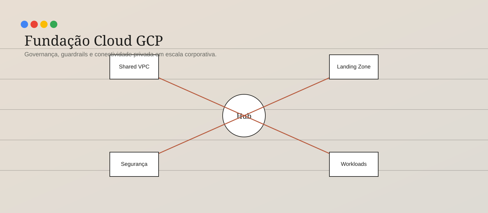
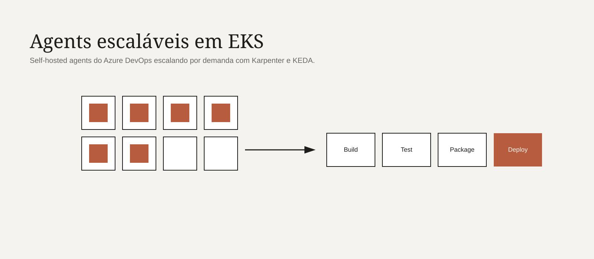
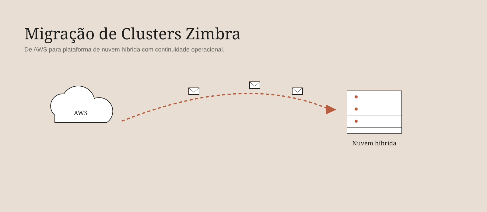

Blog · Estudos de caso
Escrevendo sobre arquitetura, plataformas e engenharia.
Notas técnicas sobre os projetos apresentados no portfólio. Cada texto é uma versão em construção — os placeholders estão prontos para eu ir lapidando o conteúdo aos poucos.

GCP · Governança
Fundação Cloud GCP
Estrutura de organização, guardrails, conectividade privada e automação de projetos em uma fundação corporativa.

AWS · Plataforma
Fundação Cloud AWS
Landing Zone, segurança centralizada, operações e conectividade híbrida via Direct Connect e Equinix Fabric.

DevOps · Kubernetes
Plataforma de Agents Escaláveis
Self-hosted agents do Azure DevOps executando em EKS, com escala dinâmica orquestrada por Karpenter e KEDA.

AWS · Kubernetes
Primeiro Cluster EKS da Alelo
Do provisionamento com Terraform ao deploy com Ansible, com observabilidade integrada via Datadog e Dynatrace.

Cloud · Migração
Migração de Clusters Zimbra
Da AWS para uma plataforma de nuvem híbrida com foco em continuidade operacional e corte coordenado.